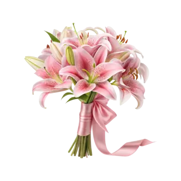

<Нажми сюда чтобы вернуться назад>
Моё солнышко! Сегодня особенный день - мы вместе уже 100 дней!
Эти 100 дней пролетели как один миг, но каждый из них был наполнен счастьем, радостью и теплом рядом с тобой. Твое прибытие в мою жизнь сделало её намного ярче, с тобой я чувствую себя намного живнее и светлее, ты мой лучик света который осветил мою темную душу. С тобой я чувствую себя более живем, любимым и нужным, твой голос и твоя улыбка способны успокоить самые сильные боли и бури в душе, рядом с тобой я забываю о всех страхах и сомнениях, потому что рядом с тобой есть уверенность и спокойствие, ты мой дом, мое утро, мой вечер, мой самый самый любимый и дорогой человек, и я готов слушать все твои душевные разговоры до утра и говорить тебе бесконечно много комплиментов, я буду любить тебя до конца жизни, какие испытания нам бы не попадались, я ради готов пойти на всё что угодно, чтобы всё было хорошо и спокойно, мы через всё пройдем вместе, любовь к тебе это не просто чувство, это часть моей души, то, что никогда не исчезнет, я люблю тебя бесконечно 🫂🤍🤍🤍🩷🤍🩷🫂🫂
Эти 100 дней пролетели как один миг, но каждый из них был наполнен счастьем, радостью и теплом рядом с тобой. Твое прибытие в мою жизнь сделало её намного ярче, с тобой я чувствую себя намного живнее и светлее, ты мой лучик света который осветил мою темную душу. С тобой я чувствую себя более живее, любимым и нужным, твой голос и твоя улыбка способны успокоить самые сильные боли и бури в душе, рядом с тобой я забываю о всех страхах и сомнениях, потому что рядом с тобой есть уверенность и спокойствие, ты мой дом, мое утро, мой вечер, мой самый самый любимый и дорогой человек, и я готов слушать все твои душевные разговоры до утра и говорить тебе бесконечно много комплиментов, я буду любить тебя до конца жизни, какие испытания нам бы не попадались, я ради готов пойти на всё что угодно, чтобы всё было хорошо и спокойно, мы через всё пройдем вместе, любовь к тебе это не просто чувство, это часть моей души, то, что никогда не исчезнет, я люблю тебя бесконечно 🫂🤍🤍🤍🩷🤍🩷🫂🫂
Мне сложно объяснить словами насколько много ты для меня значишь и насколько я сильно тебя люблю, ты тот человечек, который стал частью мою дня, моих планов и моих мыслей. Моя каоруко 🤍, котеночек мой 🩷🩷, я схожу по тебе с ума, я хочу видеть тебя и твою улыбку каждую секунду, хочу слышать твой смех, хочу видеть тебя вживую, на фоточках и кружках и просто наслаждаться тем что ты есть, ты для самый любимый и родной человек 🫂🤍🤍🩷, я хочу делить с тобой каждую эмоцию, каждую радость, каждую грусть, рассказывай всё что у тебя на душе, какие у тебя переживания или трудности, не молчи коть 🫂🩷🫂🤍мне всегда приятно когда ты со мной делишься всем, мне всегда нравится когда ты часто пишешь, прям очень, когда рассказываешь как у тебя день прошел, что новенького, когда говоришь что у тебя в жизни вообще происходит - как вышла с курсов, пришла домой, пошла купаться, готовишь кушать, убираешься, да что угодно 🤍🤍🫂🩷🫂
Мне сложно объяснить словами насколько много ты для меня значишь и насколько я сильно тебя люблю, ты тот человечек, который стал частью мою дня, моих планов и моих мыслей. Моя каоруко 🤍, котеночек мой 🩷🩷, я схожу по тебе с ума, я хочу видеть тебя и твою улыбку каждую секунду, хочу слышать твой смех, хочу видеть тебя вживую, на фоточках и кружках и просто наслаждаться тем что ты есть, ты для самый любимый и родной человек 🫂🤍🤍🩷, я хочу делить с тобой каждую эмоцию, каждую радость, каждую грусть, рассказывай всё что у тебя на душе, какие у тебя переживания или трудности, не молчи коть 🫂🩷🫂🤍мне всегда приятно когда ты со мной делишься всем, мне всегда нравится когда ты часто пишешь, прям очень, когда рассказываешь как у тебя день прошел, что новенького, когда говоришь что у тебя в жизни вообще происходит - как вышла с курсов, пришла домой, пошла купаться, готовишь кушать, убираешься, да что угодно 🤍🤍🫂🩷🫂
Мне очень приятно когда ты ещё делаешь фоточки или записывать кружки и голосовые, я всегда когда смотрю на тебя на фото или кружках, я любусь тобой, восхищаюсь и говорю: "Какая же у меня жена красотка 😍😍😍", мое солнышко, ты всегда красивая, в любом состоянии и виде, будто ты пришла только со школы или курсов или только проснулась 😍🤍🤍😍😍
Я люблю тебя очень очень очень очень сильно, больше жизни! Ты самый дорогой и любимый человек который на свете, я всегда буду рядом с тобой, несмотря на все трудности и невзгоды, мы одна семья и мы справимся со всем вместе 🫂🫂🤍🩷, ты мой приоритет номер 1 в жизни, я всегда буду о тебе заботиться, буду тебя поддерживать и буду на твоей стороне! 🫂🫂🤍🫂🩷🤍
В будущем я вижу нас двоих - как мы будем просыпаться рядом каждое утро, как будем готовить вместе, смеяться, ходить по магазинам, смотреть сериалы и аниме, и засыпать в объятиях друг друга. Хочу построить с тобой наш маленький мир, полный любви и уюта 🤍🤍🩷🩷🤍🫂🫂
Это только начало нашей прекрасной истории. Впереди еще много удивительных дней вместе! Я люблю тебя больше жизни! 💕
С любовью,
Твой Ринтаро 🤍
